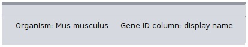

Enrichment Table App
The Enrichment Table App provides the functionality of functional enrichment analysis for any network loaded into Cytoscape using g:Profiler's web service.
This tutorial includes a basic workflow for visualizing enrichment data on pathways and networks in Cytoscape.

Setup
- Install and launch the latest version of Cytoscape.
- Install the Enrichment Table app via
Apps → App Manager . - Search for
mouse TF in NDEx and and pick top option with titleRavasi et al., CELL (2010) - Mouse TF interactions
Initialise Enrichment Table App
- Open the
Ravasi et al., CELL (2010) - Mouse TF interactions network. - Select the
Enrichment Table option from table panel - You would be greeted with a screen similar to below
Organism And Gene ID Prediction
Enrichment process requires two mandatory parameters:
-
Organism: Organism associated with the query genes -
Gene ID: Node table column containing the gene symbols
Both these parameters are predicted by enrichment table app if enough information is available
Running Enrichment Process
Click the
Filtering Table Data
There are couple of parameters based on which you can filter the table
- Click the
Filter Enrichment Table button with filter icon to access the filters - Select
Gene Ontology Biological Process in the categories. Click ok. You will see a filtered table, along with number of current rows a label above table. - Open to filter panel again and check remove redundant terms. Click ok to see terms consisting of both filters applied.
Ring Charts
Ring charts provide ability visualise top-5 terms in the network using split-charts. You can change the number of terms and type of chart in chart setting panel.
- Click
Draw Chart to create chart with default setting and split charts will appear in the network. - To remove the chart, click on
Reset Charts to remove charts - To change charts setting, go to
Visit the network specific chart settings
Term Selection
- To visualize one or more enrichment term, select the rows in the table and the corresponding nodes will get highlighted.
- Similarly, select a group of nodes in the network and only the rows that contains atleast all of the selected nodes will be present in the table.
Advanced Enrichment Settings
In addition to
Enrichment Map Generation
We can generate Enrichment Map from the enrichment data generated by our app. This requires Enrichment Map to be installed in Cytoscape. Once, enrichment map app is present, click enrichment map icon and which will provide a panel to change the file name and connectivity cutoff, and click ok to generate map.
Exporting Enrichment Table
Enrichment Table App provides functionality to export the data:
- Select the
floppy disk that will open the export panel. - Select appropriate location and file name and click "OK" to save the table.